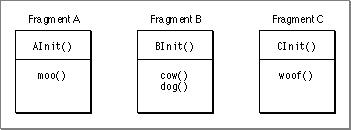

Special Symbols
A fragment can define three special symbols that are separate from the list of symbols exported by the fragment:
- a main symbol
- an initialization function
- a termination routine
The Main Symbol
The Code Fragment Manager returns the main symbol of a root fragment when preparing a closure; main symbols of any import libraries are ignored. The use of a fragment's main symbol depends upon the type of fragment containing it. For applications, the main symbol refers to the main routine, which is simply the usual entry point. The main routine typically performs any necessary application initialization not already performed by the initialization function and then jumps into the application's main event loop.Applications must define a main symbol that is the application's entry point. Import libraries and plug-ins are not required to have a main symbol. However, plug-ins having a single entry point can use a main symbol instead of an exported symbol to avoid having to standardize on a particular name.
- Note
- In fact, the main symbol exported by a fragment does not have to refer to a routine at all; it can refer instead to a block of data. See "Using the Main Symbol as a Data Structure" (page 3-24) for more information.

The Initialization Function
A fragment's initialization function is called as part of the Code Fragment Manager's fragment preparation process. You can use the initialization function to perform any actions that should be performed before any of the fragment's other code or static data is accessed. For example, in System 7, you often have to initialize various system services before you can use them (InitWindowsfor example). To make sure that all the required services are initialized before they are needed, you can put the calls to these services in an initialization function.When a fragment's initialization function is executed, it is passed a pointer to a fragment initialization block, a data structure that contains information about the fragment. In particular, the initialization block contains information about the location of the fragment's container. For example, if an import library's code fragment is contained in some file's data fork, you can use that information to find the file's resource fork.
It's important to know when the initialization function for a fragment is executed. A good rule of thumb to remember is that a fragment's initialization function is executed whenever a new data section is instantiated for that fragment.
- IMPORTANT
- The initialization function must return a value. If an initialization function returns a nonzero value, preparation of the associated closure also fails.
If the preparation of a fragment causes a (currently unprepared) import library to be prepared in order to resolve imports in the first fragment, the initialization function of the import library is executed before that of the first fragment. This makes sense because the initialization routine of the first fragment might need to use code or data in the import library. For example, Figure 1-12 shows three fragments and their initialization functions.
Figure 1-12 Three fragments with initialization functions

If fragment A imports symbols from fragment B, and fragment B imports symbols from fragment C, then C's initialization function must be run first, followed by B's, and then A's.
If you have two import libraries that depend upon each other, you may specify during the build process which should be initialized first.
Note you can run into problems if the initialization function of the import library requires routines that must be imported from another fragment. For example, in Figure 1-12, if the initialization function
AInitimportscowfrom library B, and library B's routinedogimportswooffrom library C, you cannot guarantee that library C is initialized before it is needed. In general, your initialization function should be kept simple by avoiding accessing imported symbols.The Termination Routine
A fragment's termination routine is executed only when a fragment's data instantiation is released. For example, if a fragment's data is globally shared between two applications, the fragment's termination routine would not be executed until both applications have quit. Note there is no guarantee that the termination routine will be run if your application crashes or otherwise terminates unnaturally.You can use the termination routine to undo the actions of the initialization function or perform simple cleanup operations to preserve data (such as flushing file buffers). To avoid problems with circular dependencies, your termination routine should not reference symbols from other fragments.
When a process quits, the closures associated with the process are released in a first-in/first-out manner. That is, the first closure prepared is the first released. This generally ensures that the Code Fragment Manager does not release a connection that another closure may depend upon. For example, if a process contains an application that prepared a plug-in, when the application quits, the application's closure is released first.
In general, your termination routine should be as simple as possible. For example, you may have your termination routine flush internal I/O buffers to any open files, but you don't need to actually close the files since the process termination sequence takes care of this action.